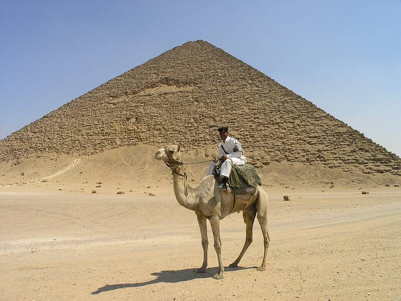

Bent and Red Pyramids
Dahshur, Egypt, about 2600 BC

Two pyramids of King Sneferu, Khufu's father. The Bent Pyramid changes angle partway up, and the Red Pyramid was the first true smooth-sided pyramid. 1
Open in the interactive Watcher
Sources
- Dahshur Wikipedia